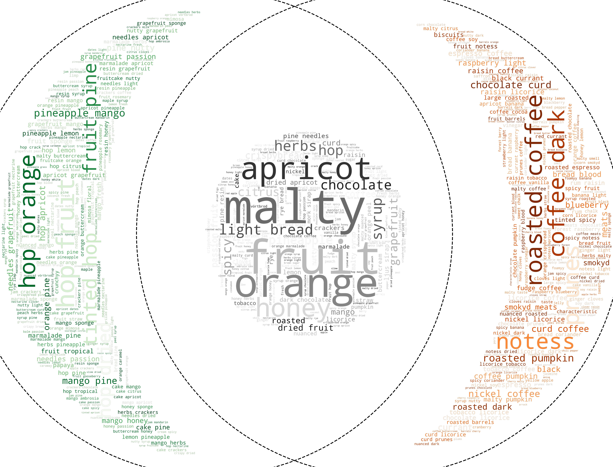

My collaborators and I are looking into how we can derive relationships between observations, documents, and documents with observations. Here we first debute the use of Venn diagrams with wordclouds, network analysis, and chord diagrams for deriving relationships between sensory attributes. When there are product category types, these can be used to group the attributes and then find the overlap between the groups. Previously, we had to draw separate wordclouds to display the sensory profile attributes of each group with descriptive commentary for each. In this composite approach, we map the wordclouds for each group, seperating the attributes unique to each group and those that overlap as well as the added frequency of each attribute. Naturally, in further developments of this composite visualization, we will add elements of frequency in the intersection, to indicate what the coontribution is from each group.
From the WordVenn diagrams we use categorical labelling by group designation to find associations between the sensory attributes. Sometimes there are no available categories or groups to assign to the products or there are too uneven a number of products in each category. The network analysis approach, in such cases, will allow us to evaluate the co-occurence of attributes in each product. In this approach we can derive the co-occurence by product instead of by product group. This approach also has the frequency of co-occurence in the form of the width of edges (the linking line between nodes). It also includes the overall frequency of each attribute among all products in the form of the node radius. Therefore we can derive which sensory attribute is the most frequently used and with which other attributes they are associated. To this analysis a clustering algorithm can be used to cluster the nodes (attributes).

The chord diagram contains similar information to the network diagram.
This provides an alternative representation to the network graph that some may find more intuitive.
The Google Looker dashboard is very well sized compared to the excel dahboard, especially for embedding. It has a variety of charts available adn is easy to compile. The Looker interface, much like many other Google developments, has and still does make many unnecessary changes continuously. This makes it very tricky to maintain an embedded graph since they often break existing functions. Looker also makes it very difficult to load data that is outside the Google suite of products.
The Excel dashboard is very laborious to compile. Much like other Microsoft apps, it is not very responsive especially for embedding. Excel in general is very fussy and unintuitive at sizing/scaling.